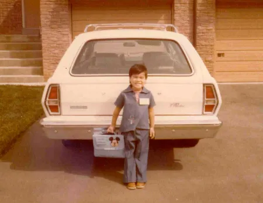

Clarity, confidence, growth
I’m a design leader with 25 years of experience building clarity, confidence, and growth into every product and every team. At Intuit, I led design across Product-Based Businesses, Indirect Tax, and Direct Tax, shaping how millions of small and mid-market companies manage sales, inventory, and compliance inside QuickBooks.

Born in Toronto, the only child of immigrant parents from the Philippines. I moved eight times before high school, constantly adapting, always curious. First jobs at Pepsi and Sprint taught me how revenue moves and how people think. Then tech school. One class. Web design. Everything changed.
Outside the work, I’m raising Isabella and Jacob, boy/girl twins who play hockey, swim, ski, and golf, fearless in everything they do.

“She didn’t just assign me to complex projects. She advocated for me to own them end-to-end, removed blockers, and positioned me as the design authority.”
“She’d spot your strengths and create the space for you to unleash them. Michica doesn’t just develop designers. She amplifies them.”
“Michica can get tactical and execute flawlessly, or step back and provide strategic guidance.”